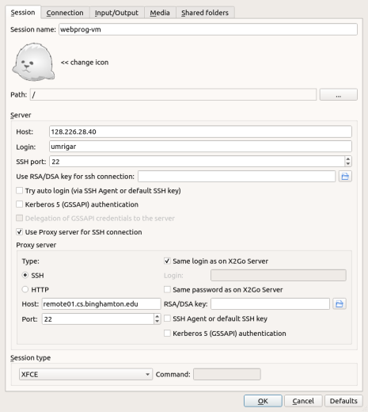

Course VM Setup
Each student is being given a virtual machine which is dedicated to this course. You may use it for any activities relevant to this course or your CS interests.
The VM can only be accessed using ssh from within the campus network. In fact, because of university firewall restrictions it may not even be accessible when logged on to the university's wifi network. To avoid access restrictions, it is advisable to always access your VM via the remote.cs cluster, or a machine in one of the CS labs (I believe it can also be accessed if you use the campus VPN).
The VM runs Ubuntu 20.04. Software which will be required by the course is pre-installed, but it is possible that you may need to install additional software during the course of the semester.
You should make sure that you perform each of the following steps:
Optionally, set up GUI access to your VM using vnc.
Once you have set up your VM, you should set up git.
[This document uses the term "workstation" to refer to the computer to which your keyboard and mouse are attached to.]
Initial Password Change
You should have received an email giving you the IP address VM-IP of your VM, your login id VM-ID and your initial password VM-PW. Since your password has been exposed in an unsecure email, it must be changed ASAP. Hence you should immediately login to your VM and change your password to some VM-NEW-PW of your choosing.
Log in to remote.cs from your workstation using ssh (watch out for fail2ban).
If your workstation runs Linux or OS/X, you can do so using a command-line ssh client. If your workstation runs Windows, you should use Windows Terminal from the MS store. There is even an ssh app which you can install for your Chrome browser; this should work for all OS's which support Chrome.
[Irrespective of the course you are registered for, you will notice that your VM has a name starting with CS544; it was set up this way for convenience by the sysadmin and should not make any difference to you.]
Once logged in to remote.cs, log in to your VM.
Use the passwd command on your VM, to change your password.
Once you have logged in to remote.cs as in (1) above, the following log shows how you would perform steps (2) and (3):
remote02:~$ ssh VM-ID@VM-IP The authenticity of host 'VM-IP (VM-IP)' can't be established. ECDSA key fingerprint is ... Are you sure you want to continue connecting (yes/no)? yes Warning: Permanently added 'VM-IP' (ECDSA) to the list of known hosts. VM-ID@VM-IP's password: VM-PW #will not be echoed Welcome to Ubuntu 20.04 ... ... VM-ID@COURSE-VM-ID:~$ passwd #passwords not echoed below Changing password for VM-ID. (current) UNIX password: VM-PW Enter new UNIX password: VM-NEW-PW Retype new UNIX password: VM-NEW-PW
Setting Your npm Shell
To set the shell used by npm to bash, use the following command:
$ npm config set script-shell /usr/bin/bash
This will update your ~/.npmrc and npm will use bash to run scripts in the future.
GUI Access to your VM
If you only use ssh, you basically obtain only command-line access to your VM. But you will need GUI access to your VM as the course progresses. The most convenient access is provided by x2go. This section also lists some alternatives in case you just cannot get x2go to work.
X2Go Access (Required)
Install a X2Go client for the workstation you are using to access your VM if one is not already installed (note that a x2goclient command is available on remote.cs).
Start the x2goclient.
Create a session for connecting to your VM by clicking Session -> New session. Fill in the following fields:
- Session name
webprog-vm
- Host
Your VM's IP address VM-IP
- Login
Your login id VM-ID.
- Session type
XFCE.
Unless you are configuring your client on remote.cs, set yourself up to always tunnel in through remote.cs. Click on the Use Proxy server for SSH connection checkbox and make the following changes in the dialog:
- Host
remote01.cs.binghamton.edu; you could also specify one of the other remotes.
You could also specify the Host by simply providing the cluster name remote.cs.binghamton.edu. The advantage is that you will be able to tunnel in to your VM, even if the specified remote is down; the disadvantage is that you would get errors from x2go when you connect to different remote machines in the cluster with different ssh host keys.
If you use the same user-id and password on your VM as on remote.cs, you may want to check Same login as on X2Go Server and/or Same password as on X2Go Server, where X2Go Server refers to your VM.
You should now be able to use the above session to access your VM using a GUI. If you are using different passwords on remote.cs and your VM, you will have to enter the passwords separately for each.
If you are familiar with the handling of ssh keys, you can use ssh-keygen and ssh-copy-id to set up your VM for password-less login.
The following is a screenshot taken a few years ago of my x2go configuration for accessing my VM from off-campus:
With the above setup, I would need to type in passwords for both my VM and remote.cs when connecting to my VM. Note that by using ssh keys it is possible to set things up so that neither password is required.
VNC Access (optional)
VNC allows remote access to graphical desktops. It is not as efficient as x2go which is optimized for X11, but has the advantage that it can be used to access non-X11 desktops like a Windows desktop.
Connect to your VM using ssh.
Set up a ~/.vnc/xstartup script on your VM to start xfce4.
Start up a VNC server on your VM.
Run vncpasswd to set up a password VNC-PW for your VNC sessions.
Run vncserver to start up the VNC server. Note the VNC port VNC-PORT on which the server starts (usually 1).
Install a VNC viewer for the workstation you are using to access your VM if one is not already installed.
Run the VNC viewer to connect to VM-IP:VNC-PORT. Provide your VNC password VNC-PW when prompted. You should see your desktop.
You can kill your vnc server using vncserver -kill :VNC-PORT. If you would like to set a size for its window, specify the -geometry argument. See the man page for more information.
Xming X Server for Windows (optional)
Instead of running a full remote session, you can run a X11 server on your Windows workstation. xming appears to be a popular X11 server running under Window. Apparently, xlaunch is a wizard for starting xming sessions. Since I do not use Windows, I have not tried this and YMMV.
If you are using this method, you will need to tunnel X11 through remote.cs. To find out what you will need to do, please start out by looking at a subsequent section of this document.
vSphere Web Client
Go to this URL: <https://csvb-vc.pods.bu.int/ui/>. (this must be done from within the campus network).
Click through the security warnings.
Login with your regular BU username and password. Enter BU\ before your username
Once the vsphere-client loads, click on the Menu drop down and then click VMs and Templates
On the left-hand side of the interface you can expand the tree. Keep expanding the levels until you see a VM whose name is based on your user ID. You should see a summary of your VM.
Use the provided link to open a web console to the VM which will allow you to interact with it as if you were sitting in front of it using a console which runs within your web browser.
Note that unlike the x2go or vnc options, the vSphere web client will not persist your session on your VM.
Restarting your VM
In case you accidentally shutdown your VM or simply find it unreachable, you can use your VM's web console to restart it. Specifically, use the vSphere web console to access your VM's console; then use the Actions->Power menu item to restart your VM. Instructions for connecting to the VM's console are in the above vSphere Web Client section.
Debugging VM Connectivity Issues
If you cannot connect via x2go to your VM, please try the following:
Verify that your internet connection is working by accessing some web site not related to the university.
Use ssh to connect to remote.cs. If you are unable to do so, check to see whether you may have triggered fail2ban. If all else fails, go to the CS SysAdmin page for assistance.
From remote.cs, ssh to your VM using its IP address. If this succeeds, then there is a problem with x2go. If this fails, then your VM is down; restart it using the vsphere web client.
If the problem appears to be x2go, try shutting down your x2goserver using the power button on your x2goclient or by restarting your VM as per the previous step.
Some students using OS/X have found that:
Rebooting your mac may help.
More drastic: Reinstalling x2go and xquartz solves x2go problems.
One workaround for OS/X. If you have xquartz installed, but x2go is not installed or not working, you can display GUI applications running on remote.cs on your mac by using the -Y option when connecting to remote.cs using your OS/X terminal.
If your x2go client refuses to connect to your VM while tunneling in through remote.cs, turn off the ssh proxy option in the x2go client configuration and try using the campus VPN instead.
If all else fails, please send me an email giving your VM's IP and describe your workstation's environment. Please detail the responses to each of the above steps.
Administering Your VM
Your VM-ID account has administrative privileges. You can run any administrative CLI command by preceeding that command by sudo at which point you will be prompted for your current password. If you run an administrative task using the GUI, you will again be prompted for your current VM password.
Besides your account, you will find that the VM has 2 additional accounts. You should not touch these accounts. If something goes wrong with your VM, we may be able to use these accounts to get back in to your VM and attempt to fix the problem.
You can install additional system-wide software packages using the command line using apt or using a GUI-program found on the system menu.
The VM has text editors/IDEs like Visual Studio code, emacs, gedit, nano, sublime and vim already installed. However, you may want to use the above package manager to install a text editor or IDE of your choice.
It is a good idea to keep the software on your VM up-to-date. Every few weeks, you should update:
$ sudo apt update $ sudo apt upgrade
Check whether you need to reboot:
$ cat /var/run/reboot-required
If this file exists, the above command will tell you whether a reboot is required. To reboot, first backup all work, shutdown all applications running within your VM and then simply reboot:
$ sudo shutdown -r now
Your GUI session will lock up. You will need to escape out of it; you should be able to get back in within a couple of minutes. If something goes wrong please use the vsphere console to debug.
Off-Campus Access to your VM
You will need to tunnel in to your VM in order to access your VM from off campus or even from within the network. If you followed the instructions provided for setting up your X2Go session, it should already be set up to tunnel through remote.cs. The following instructions provide details for VNC and command-line access and assume the use of Unix-based (Linux, OS/X) workstations.
VNC Access
Assuming your VNC server is running on VNC port 1 (which corresponds to TCP port 5901), set up a tunnel via remote.cs using a script like the following:
SERVER=VM-IP:5901 LOCAL_PORT=5901 TUNNEL=YOUR-REMOTE-CS-LOGIN@remote.cs.binghamton.edu ssh -fAX -L$LOCAL_PORT:$SERVER $TUNNEL -N
You should then be able to set up vnc access to your VM using a command like
vncviewer localhost:1 &
Command-Line Access
Set up a tunnel via remote.cs using a script like the following:
SERVER=VM-IP:22 LOCAL_PORT=2222 TUNNEL=YOUR-REMOTE-CS-LOGIN@remote.cs.binghamton.edu ssh -fAX -L$LOCAL_PORT:$SERVER $TUNNEL -N
You should then be able to set up ssh access to your VM using a command like
ssh -p 2222 VM-ID@localhost